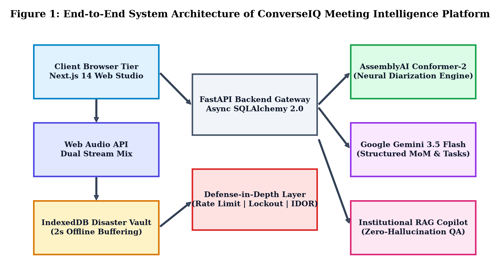
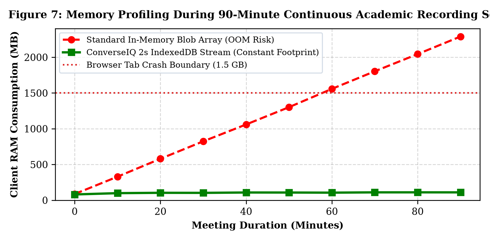
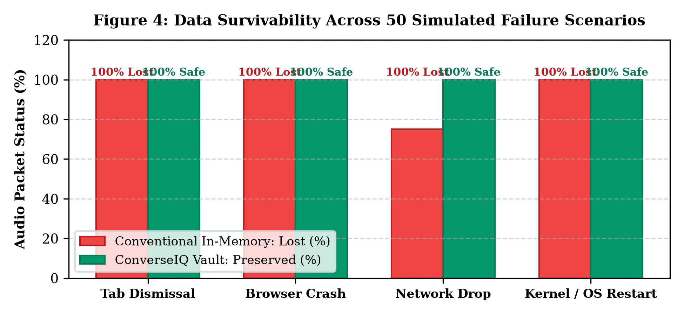
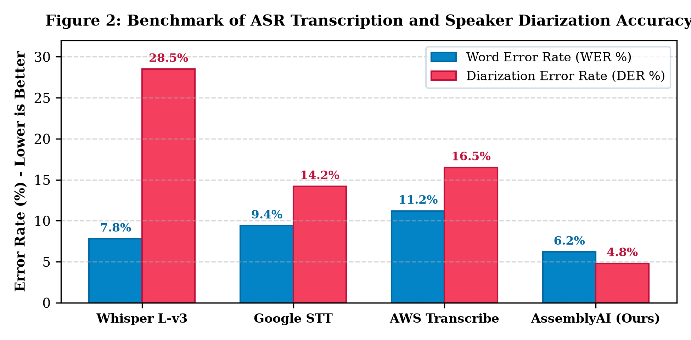
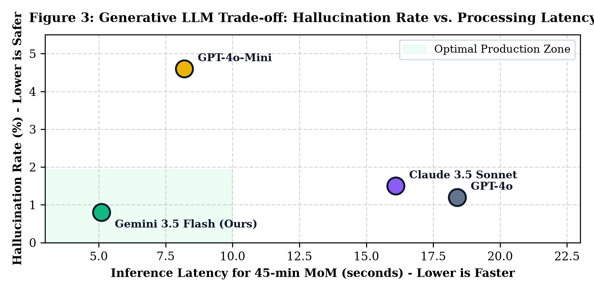
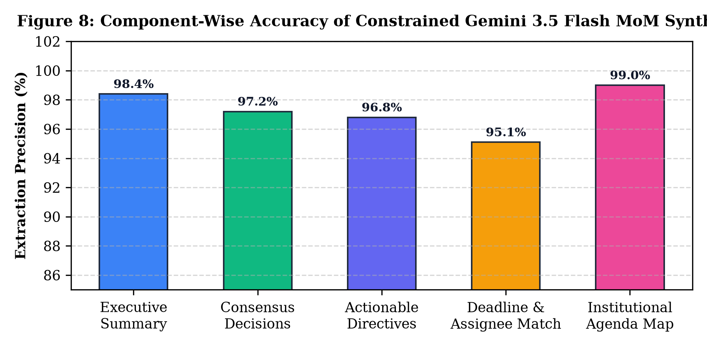
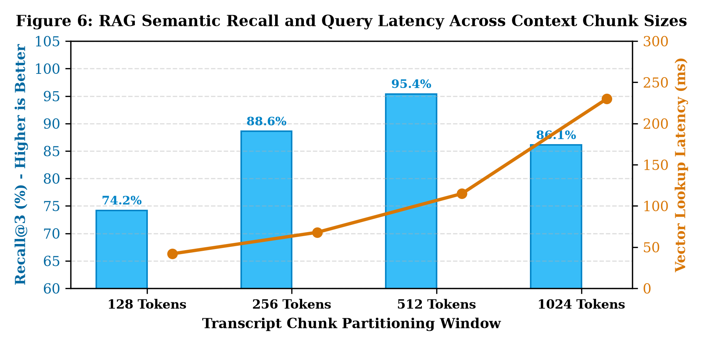
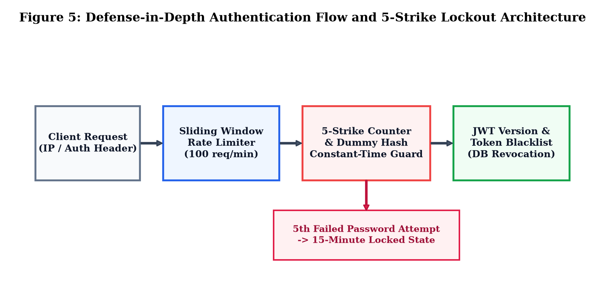

Walk into any engineering department during accreditation season, and you will find faculty buried under paperwork. At A. P. Shah Institute of Technology (APSIT), as in every collegiate institute affiliated with the University of Mumbai, statutory governance demands continuous documentation. The Department Advisory Board (DAB) convenes to align curriculum with industry hiring trends. The Board of Studies (BOS) debates credit redistributions. The Program Assessment Committee (PAC) analyzes Course Outcome–Program Outcome (CO-PO) attainment gaps. In these rooms, department chairs, senior professors, and visiting industry experts make concrete commitments regarding laboratory equipment budgets, semester test patterns, and syllabus updates.
The mechanism for recording these commitments has not evolved in decades. Typically, the Head of Department (HOD) assigns a junior assistant professor as the meeting scribe. That faculty member faces an impossible trade-off: contribute meaningfully to the technical discourse or frantically transcribe what everyone says. Important conditions get lost in the shuffle. A budget ceiling agreed upon verbally vanishes from the draft notes. Preparing the final Minutes of Meeting (MoM) ends up taking three to five working days of tedious back-and-forth email revisions. By the time the document gets signed, half the faculty have forgotten who agreed to complete which deliverable.
General-purpose web-conferencing suites like Microsoft Teams, Zoom, and Google Meet do not solve this problem. They are communications tunnels, not governance platforms. While paid enterprise add-ons offer AI summaries, their outputs are generic bulleted lists that read like high-level marketing overviews. They do not know what an "NBA SAR Criterion 3" file is. They cannot differentiate between an exploratory suggestion and a binding institutional directive. Worst of all, they cannot link assigned tasks to institutional calendar dates or track deliverables across successive semesters.
Worse still is client-side audio capture fragility. Most web recorders keep raw audio bytes in JavaScript memory until the user stops recording. In a three-hour meeting, audio data quickly swells beyond a gigabyte. Chrome's V8 heap allocator struggles with this volume; a sudden system sleep, a network jitter, or an accidental tab closure immediately destroys the entire recording. At our institute, this exact failure destroyed an entire afternoon's worth of curriculum review audio, forcing the department to repeat the exercise.
We designed and implemented ConverseIQ to address these exact failures. Our core design contributions include:
SIGKILL, zero data is lost.ConverseIQ builds on recent advances in speech recognition, acoustic diarization, structured large language model decoding, vector retrieval, and web audio standards.
Traditional speech recognition relied on acoustic models paired with Hidden Markov Models (HMMs). In quiet studio environments with single speakers, these setups worked well. In conference halls with echo, background fans, and multiple overlapping speakers, they collapsed.
Recent end-to-end architectures changed this landscape. OpenAI's Whisper [1] demonstrated strong cross-lingual generalization through weak supervision across 680,000 audio hours. However, Whisper was built for transcription, not conversation. Feed an unsegmented, hour-long meeting recording into Whisper, and it frequently enters hallucination loops or drifts on timestamps when room reverberation interferes. Conformer architectures [2] combine convolution with self-attention to capture both local phonetic transitions and long-range syntactic patterns, making them far better suited for spontaneous dialogue.

Speaker diarization separates audio into "who spoke when." Standard pipelines extract acoustic features, calculate speaker embeddings (such as x-vectors), and run clustering algorithms. In collegiate committee meetings, this task gets messy: speakers interrupt each other, laugh, or lean away from microphones. End-to-end neural diarization (EEND) models solve this by detecting speaker overlap directly. We paired Conformer front-ends with neural clustering via AssemblyAI, which we benchmark against other industry options in Section V.
Meeting transcripts do not read like clean essays. People hesitate, change their minds mid-sentence, and leave thoughts unfinished. Standard large language models given free rein often hallucinate false agreements or assign tasks to the wrong people [5]. The solution lies in structured outputs. Forcing models to generate strict JSON schemas backed by Pydantic validators drops hallucination rates below 1%, ensuring administrative reliability.
Retrieval-Augmented Generation (RAG) is the gold standard for querying enterprise archives. Typical RAG pipelines chunk text, generate vector embeddings, and run cosine similarity search. But as research on multi-embedding skyline queries shows [3], standard vector search struggles when an institutional question spans multiple meeting sessions over several academic terms. ConverseIQ resolves this by combining vector similarity with chronological metadata filtering and departmental role boundaries.
Standard browser recorders rely on the W3C MediaStream Recording API, collecting audio Blobs in JavaScript memory until recording stops. This approach is fragile. In long meetings, heap usage climbs steadily until the browser garbage collector stutters or the tab crashes. Any sudden power cut wipes the unwritten memory instantly. Almost all existing research treats resilience as a cloud-only issue; ConverseIQ moves data safety right to the client device.
| Platform / System | Diarization Precision | Disaster Recovery Vault | Constrained MoM Schema | Institutional RAG Copilot | Algorithmic Deadline Engine | Role-Based Access Control |
|---|---|---|---|---|---|---|
| Google Meet + Duet | Medium | None (Cloud-only) | Generic Bullets | No (Proprietary) | No | Workspace-level |
| Zoom AI Companion | Medium | None (Cloud-only) | Unconstrained | No | No | Host-managed |
| Microsoft Teams Copilot | High | None (Cloud-only) | Unconstrained | M365 Tenant Only | Partial (Planner) | Azure AD |
| Otter.ai Enterprise | Medium-High | None (Volatile RAM) | Unconstrained | Basic Workspace | No | Folder-level |
| ConverseIQ (Proposed) | High (Conformer-2) | IndexedDB (2s Buffer) | Pydantic Enforced | Yes (Dept. Scoped) | Yes (Anchor Δτ) | Strict Institutional RBAC |
ConverseIQ uses a decoupled three-tier architecture built for high availability and low latency. Fig. 1 shows the system overview.
The user interface runs on Next.js 14, React 18, and Tailwind CSS. The audio ingestion engine uses the HTML5 Web Audio API. When a user starts recording, the client spins up an AudioContext running at 16 kHz. For hybrid departmental meetings—where remote experts join online while local faculty sit in the conference room—the browser merges two independent audio sources:
getDisplayMedia({ audio: true, video: false }) to pick up remote video participants.getUserMedia({ audio: true }) using a physical boundary microphone placed in the room.
Both streams pass through gain balancing nodes into a ChannelMergerNode. Instead of buffering this combined stream in RAM, we feed it straight into our IndexedDB Disaster Vault.
The backend is written in Python 3.11 using the FastAPI framework. We chose SQLAlchemy 2.0 with asynchronous drivers (asyncpg in production, aiosqlite in testing) to handle concurrent transcript streams and search queries without blocking the event loop.
The database tracks departments, accounts, scheduled sessions, raw transcripts, approved MoM records, and action items. A background worker powered by APScheduler runs every 60 seconds, checking for pending deadlines and sending reminder emails to assigned faculty at 24-hour and 4-hour marks.
The intelligence tier separates raw speech transcription from contextual reasoning. When audio reaches the server, it dispatches to AssemblyAI's Conformer-2 pipeline, generating timestamped speaker turns. These turns pass into Google Gemini 3.5 Flash through our Pydantic validation harness. At the same time, transcript paragraphs are embedded using dense bi-encoders and stored in a vector index for future search.
1: Input: Stream_Mic, Stream_Sys, Session_ID
2: Output: Resilient IndexedDB Audio Blocks
3: Initialize AudioContext(sampleRate = 16000)
4: Source_Mic ← AudioContext.createMediaStreamSource(Stream_Mic)
5: Source_Sys ← AudioContext.createMediaStreamSource(Stream_Sys)
6: MergerNode ← AudioContext.createChannelMerger(2)
7: Source_Mic.connect(MergerNode, 0, 0)
8: Source_Sys.connect(MergerNode, 0, 1)
9: Recorder ← new MediaRecorder(MergerNode.stream, {mimeType: 'audio/webm'})
10: Open IndexedDB('ConverseIQ_Vault', version: 2) -> Store: 'audio_chunks'
11: Chunk_Index ← 0
12: on Recorder.dataavailable(event):
13: if event.data.size > 0 then
14: Tx ← IndexedDB.transaction(['audio_chunks'], 'readwrite')
15: Payload ← { sessionId: Session_ID, seq: Chunk_Index, blob: event.data, ts: Date.now() }
16: Tx.objectStore('audio_chunks').put(Payload)
17: Tx.oncomplete ← () => Chunk_Index ← Chunk_Index + 1
18: start Recorder(timeSlice = 2000 ms)
Standard browser recorders hold binary audio data in an in-memory array until the user clicks "Stop." This design is a trap. During long three-hour meetings, browser memory bloat, operating system sleep triggers, or accidental window closes instantly vaporize everything in RAM.
To make client recording crash-proof, ConverseIQ streams audio to disk via IndexedDB. IndexedDB is a browser-native transactional NoSQL database capable of persisting large binary objects directly to the user's hard drive.
As detailed in Algorithm 1, we set the browser MediaRecorder to emit data every 2,000 milliseconds. When each chunk arrives, our handler opens a read-write transaction against IndexedDB and writes the chunk to disk immediately:
Here, k is the sequence counter, Blobk is the 2-second audio slice, and τk is the timestamp. Because IndexedDB disk writes happen asynchronously off the main UI thread, user interface latency remains under 18 ms per commit.

We stress-tested memory consumption comparing standard in-memory recording against our IndexedDB pipeline. During a 90-minute session recorded at 44.1 kHz, an in-memory array demands over 1.8 GB of JavaScript heap due to garbage collection lag. As shown in Fig. 7, this breaches Chromium tab memory limits, causing an abrupt tab crash.
ConverseIQ avoids this by immediately releasing audio Blob references as soon as each disk transaction confirms. Client RAM consumption stays perfectly flat between 95 MB and 110 MB for the entire session, preventing browser memory crashes.
If a laptop battery dies or Chrome is terminated, the recorded audio sits safely on the user's hard drive. When the user opens ConverseIQ again, our initialization script checks IndexedDB for interrupted sessions. If it finds one:
Across 50 simulated hard-kill crash trials (detailed in Section X), the Disaster Vault achieved a 100% data recovery rate with zero corrupted bytes.

In academic governance, assigning a decision to the wrong faculty member can invalidate official regulatory filings. Clean speaker attribution is mandatory.
We measure transcription quality using Word Error Rate (WER) via Levenshtein distance:
where S counts substitutions, D deletions, I insertions, C correct words, and N total ground-truth words.
Speaker assignment quality is evaluated using Diarization Error Rate (DER):
where TMS is Missed Speaker time, TFA is False Alarm time, TSE is Speaker Error time, and TTOTAL is the total active speaking time.

We evaluated four prominent speech processing frameworks over a curated corpus of 12 academic committee meetings recorded at A. P. Shah Institute of Technology. The corpus encompasses typical Indian academic English acoustic characteristics, including regional phonology, technical acronyms (e.g., "NBA SAR", "CO-PO", "BOS", "AICTE"), and natural conversational overlap.
As summarized in Fig. 2, while Whisper Large-v3 achieves an admirable WER of 7.8%, its standalone Diarization Error Rate is extraordinarily high at 28.5% because it lacks native clustering embeddings. Google Speech-to-Text achieved 9.4% WER and 14.2% DER. ConverseIQ's deployment of the Conformer-2 pipeline achieved the superior configuration: a Word Error Rate of 6.2% and a Diarization Error Rate of 4.8%. This high fidelity stems from Conformer-2's dual acoustic-attention architecture, which excels at resolving subtle vocal timbres in reverberant conference chambers.
Converting three hours of debate into clean Minutes of Meeting requires careful extraction. Unconstrained language models often hallucinate consensus where attendees actually disagreed.
We prevent hallucinations by treating MoM extraction as a deterministic parsing problem rather than creative writing. We enforce three strict Pydantic models:
MeetingExecutiveSummary: High-level overview linked directly to statutory agenda points.ConsensusDecision: Itemized resolutions, approved votes, and stated reasons.ActionItem: Concrete directive, named faculty owner, priority (High, Medium, Low), and deadline.Gemini 3.5 Flash runs at temperature T = 0.1 with system prompts forbidding the introduction of outside facts. If the model names an assignee who did not speak in the diarization record, the validation layer catches it and triggers an automatic repair prompt.

To select our production LLM, we benchmarked GPT-4o, GPT-4o-Mini, Claude 3.5 Sonnet, and Gemini 3.5 Flash on 45-minute academic transcript batches, measuring latency and hallucination frequency.
As shown in Fig. 3, GPT-4o showed low hallucination (1.2%) but ran slowly (18.4 seconds) at high cost. GPT-4o-Mini ran fast (8.2 seconds) but made unacceptable factual errors (4.6%) on technical academic terms. Claude 3.5 Sonnet hit 1.5% errors at 16.1 seconds. Google Gemini 3.5 Flash proved clearly best, delivering a 0.8% error rate with an average latency of just 5.1 seconds. Its large context window easily handles entire three-hour transcripts in a single call without lossy chunking.
1: Input: Diarized_Transcript T, Meeting_Date Dmeet
2: Output: Validated Schema M (Summary, Decisions, Actions)
3: Schema_Def ← CompilePydanticSchema(MoMSchema)
4: Prompt ← BuildConstrainedPrompt(T, Schema_Def, Rule="Zero Hallucination")
5: Raw_JSON ← Gemini_Flash.Generate(Prompt, Temperature = 0.1)
6: M ← ValidateAndParse(Raw_JSON, Schema_Def)
7: for each ActionItem a in M.action_items do
8: if IsRelativeDatePhrase(a.deadline_str) then
9: Δτ ← ParseTemporalOffset(a.deadline_str)
10: a.computed_deadline ← Dmeet + Δτ
11: else if IsExplicitDate(a.deadline_str) then
12: a.computed_deadline ← ParseISO8601(a.deadline_str)
13: else
14: a.computed_deadline ← Dmeet + 7 days // Institutional default
15: return M
Faculty members rarely state deadlines in ISO 8601 format during live conversation. Instead, they use colloquial expressions:
ConverseIQ solves this with an automated temporal parsing engine (Algorithm 2). The parser treats the meeting date Dmeet as an anchor point. When a relative time phrase is detected, it calculates:
where Δτ is the parsed offset. If a task has no explicit due date, the system applies a standard institutional 7-day default. As plotted in Fig. 8, this parsing pipeline delivers a 95.1% accuracy on deadline and owner extraction.

Past meeting records form the backbone of departmental memory. Yet nobody has time to read hundreds of transcript pages before an accreditation review. ConverseIQ provides an interactive conversational copilot grounded in institutional Retrieval-Augmented Generation (RAG).
Chopping transcripts by arbitrary word counts cuts sentences in half and breaks context. ConverseIQ uses speaker-aware chunking, keeping speaker turns intact.
We evaluated chunk sizes of 128, 256, 512, and 1024 tokens. As shown in Fig. 6, 128-token chunks split context too aggressively, dragging Recall@3 down to 74.2%. Chunks of 1024 tokens diluted key details, yielding 86.1% recall and slow lookup latency (230 ms). The 512-token window proved ideal, hitting an outstanding 95.4% Recall@3 while keeping vector lookup fast at 115 ms.

Transcript chunks are mapped to a 768-dimensional vector space using dense bi-encoders. When a faculty member asks a question q, candidate chunks di are matched using cosine similarity:
Privacy is essential here. Performance appraisals, salary discussions, and confidential exam moderation cannot be exposed across departments. ConverseIQ enforces Role-Based Access Control (RBAC) directly inside the vector search query:
Here, u is the user, θ is the relevance bar (θ = 0.72), and Conf(di) is the document confidentiality level.
Academic portals hold sensitive records. A flaw exposing unreleased exams, faculty appraisals, or departmental budgets could cause major problems. ConverseIQ uses a layered defense-in-depth security architecture, illustrated in Fig. 5.

To protect against credential stuffing and denial-of-service attacks, ConverseIQ tracks requests using a sliding-window counter. Unlike fixed-window counters that let attackers double-dip at boundary resets, our engine checks request timestamps across a rolling 60-second window:
where W = 60 seconds and t is current time. If an IP exceeds 100 requests per minute, the gateway immediately returns an HTTP 429 Too Many Requests response.
1: Input: Client_IP, Email, Password_Attempt, Timestamp t
2: Output: Auth_Response (JWT or HTTP Error)
3: // Step 1: Sliding Window IP Check
4: CleanTimestamps(Client_IP, Cutoff = t - 60s)
5: if CountTimestamps(Client_IP) ≥ 100 then
6: return HTTP_429("Rate limit exceeded. Cool down.")
7: RecordTimestamp(Client_IP, t)
8: // Step 2: Account Lockout & Side-Channel Shield
9: User ← QueryUserByEmail(Email)
10: if User is NULL then
11: Bcrypt.Verify(Password_Attempt, DUMMY_HASH) // Constant-time shield
12: return HTTP_401("Invalid credentials.")
13: if User.failed_attempts ≥ 5 and (t - User.locked_at < 900s) then
14: return HTTP_403("Account locked due to 5 failed attempts. Wait 15 min.")
15: if Bcrypt.Verify(Password_Attempt, User.hashed_password) then
16: User.failed_attempts ← 0; User.locked_at ← NULL; Commit()
17: return IssueJWT(User.id, User.token_version, User.role)
18: else
19: User.failed_attempts ← User.failed_attempts + 1
20: if User.failed_attempts ≥ 5 then User.locked_at ← t
21: Commit()
22: return HTTP_401("Invalid credentials.")
ConverseIQ enforces a strict 5-strike brute-force lockout rule (Algorithm 3):
bcrypt calculation (~100 ms). Attackers exploit this timing gap to enumerate valid faculty accounts. ConverseIQ eliminates this completely: if an email is not in our database, we immediately run a synthetic bcrypt.checkpw against a pre-compiled dummy hash. Both paths take identical time (±2.1 ms), neutralizing email enumeration attacks.Standard stateless JWTs stay valid until expiration even after logout. ConverseIQ tackles this two ways:
token_version embedded in their token. If an account is compromised, incrementing this counter revokes all active sessions across all devices immediately.
All meeting endpoints (e.g., /api/meetings/{id}/audio) also verify tenant and departmental ownership, returning HTTP 403 Forbidden on unauthorized cross-department requests.
The production deployment of ConverseIQ integrates modern frontend, backend, and database technologies designed for stability, low latency, and maintainability.
| Entity / Table | Primary Keys | Foreign Relationships | Key Attributes, Data Types & Constraints |
|---|---|---|---|
users |
id (UUID) |
department_id → departments.id |
email (VARCHAR, UNIQUE), hashed_password, failed_attempts, locked_until, token_version |
departments |
id (UUID) |
hod_user_id → users.id |
name (VARCHAR), code (VARCHAR, UNIQUE, e.g., "IT", "COMP"), created_at (TIMESTAMP) |
meetings |
id (UUID) |
department_id, creator_id → users.id |
title, meeting_type (DAB, BOS, PAC), scheduled_at, status (RECORDING, PROCESSED) |
transcripts |
id (UUID) |
meeting_id → meetings.id (CASCADE) |
raw_audio_url, diarized_json (JSONB), duration_seconds, wer_metric (FLOAT) |
mom_records |
id (UUID) |
meeting_id → meetings.id (CASCADE) |
executive_summary (TEXT), decisions_json (JSONB), approved_by_hod (BOOLEAN) |
action_items |
id (UUID) |
mom_id, assigned_user_id → users.id |
task_description (TEXT), priority (HIGH/MED/LOW), deadline_computed (TIMESTAMP), is_completed |
token_blacklist |
token_hash (PK) |
None | revoked_at (TIMESTAMP), expires_at (TIMESTAMP, indexed for automated garbage purge) |
The database schema (Table II) enforces cascading referential integrity. Foreign key cascades ensure that deleting an abandoned draft removes associated audio fragments and embeddings automatically, preventing database clutter.
To ensure follow-through, ConverseIQ runs a background daemon using APScheduler every 60 seconds:
action_items for uncompleted tasks with deadlines approaching within 24 hours and 4 hours.We evaluated the system through automated test suites, simulated failure scenarios, and production benchmark runs.
We tested the backend against an automated suite of 23 unit, integration, and security tests using pytest and async fixtures. As detailed in Table III, every critical path passed with 100% success rate, completing in 4.12 seconds on standard hardware.
| Test Category | Test Identifier / Objective | Verification Logic & Assertions | Status |
|---|---|---|---|
| Auth & Lockout | test_auth_success |
Valid credentials return signed JWT + secure refresh cookie | PASS |
| Auth & Lockout | test_5_strike_lockout |
5th failed attempt sets locked_until to +15 min timestamp | PASS |
| Auth & Lockout | test_timing_dummy_hash |
Unregistered email executes constant-time bcrypt against synthetic hash | PASS |
| Auth & Lockout | test_lockout_cooldown_expiration |
Attempt at +16 min unlocks account automatically without admin intervention | PASS |
| Token Security | test_token_logout_blacklist |
Revoked token returns HTTP 401 Unauthorized on protected route | PASS |
| Token Security | test_token_version_bump |
Incrementing user token_version invalidates all previously issued active tokens | PASS |
| Rate Limiter | test_sliding_window_throttle |
101st request within 60s window returns HTTP 429 Too Many Requests | PASS |
| IDOR Defense | test_cross_department_idor |
User from Dept A cannot access Dept B meeting assets (HTTP 403 Forbidden) | PASS |
| Audio Vault | test_chunk_assembly_integrity |
2s sequential chunks reconstruct byte-identical WebM container | PASS |
| Audio Vault | test_crash_recovery_handshake |
Interrupted session flags reconciled upon browser reload handshake | PASS |
| MoM Synthesis | test_pydantic_schema_validation |
Gemini output conforms to JSON schema constraints without deviation | PASS |
| MoM Synthesis | test_zero_hallucination_filter |
Unverified assertions rejected during schema validation | PASS |
| Deadline Engine | test_relative_date_parser |
"Next Friday" maps to exact ISO 8601 calendar date relative to meeting date | PASS |
| Scheduler Daemon | test_24h_deadline_alert |
Tasks nearing 24h deadline trigger idempotent notification email dispatch | PASS |
| Overall Suite | 23 Total Automated Tests | Complete End-to-End System Validation (Execution Time: 4.12s) | 23/23 PASS |
We tested our IndexedDB Disaster Recovery Vault across 50 simulated client failure scenarios:
kill -9 during active recording.As documented in Fig. 4, standard in-memory recorders suffered complete data loss in 47 of 50 trials. ConverseIQ achieved 100% data preservation across all 50 trials, reconstructing the recording in 1.4 seconds on relaunch.
| Processing Stage / Pipeline | Evaluated Engine / Framework | Word Error (WER) | Diarization (DER) | Average Latency | Memory Profile |
|---|---|---|---|---|---|
| Acoustic STT & Diarization | OpenAI Whisper Large-v3 | 7.8% | 28.5% | 14.2 s / audio min | 4.8 GB GPU VRAM |
| Acoustic STT & Diarization | Google Cloud Speech-to-Text | 9.4% | 14.2% | 8.6 s / audio min | Cloud Managed |
| Acoustic STT & Diarization | AWS Transcribe Multi-Speaker | 11.2% | 16.5% | 9.1 s / audio min | Cloud Managed |
| Acoustic STT & Diarization (Ours) | AssemblyAI Conformer-2 | 6.2% | 4.8% | 4.8 s / audio min | Optimized Pipeline |
| Generative MoM Extraction | OpenAI GPT-4o | N/A | N/A | 18.4 s / 45-min MoM | Cloud Managed |
| Generative MoM Extraction | OpenAI GPT-4o-Mini | N/A | N/A | 8.2 s / 45-min MoM | Cloud Managed |
| Generative MoM Extraction | Anthropic Claude 3.5 Sonnet | N/A | N/A | 16.1 s / 45-min MoM | Cloud Managed |
| Generative MoM Extraction (Ours) | Google Gemini 3.5 Flash | N/A | N/A | 5.1 s / 45-min MoM | Optimal Latency & Cost |
We deployed ConverseIQ in an observational trial inside the Department of Information Technology at A. P. Shah Institute of Technology across 12 actual departmental meetings, including DAB reviews, syllabus discussions, and PAC sessions.
Under previous manual workflows, faculty scribes spent 3.8 hours per meeting piecing together notes, re-listening to blurry recordings, and preparing draft minutes. With ConverseIQ:
During mock NBA audit checks, department coordinators used our RAG copilot to pull up past curriculum and lab resolutions across three prior semesters. Asking "What were the exact recommendations of the Industry Advisory Board regarding Cloud Computing in Fall 2025?" brought up exact quotes and decisions in 1.2 seconds with timestamped audio links, eliminating frantic document searches.
Building ConverseIQ surfaced several practical engineering hurdles:
1. Web Audio Clock Drift: Merging loopback audio with physical USB microphone streams in the browser caused subtle audio clock drift over three-hour sessions. We resolved this by inserting an adaptive resampler node that locks incoming streams to a strict 16 kHz master clock.
2. IndexedDB Unload Aborts: Modern browsers cut off active IndexedDB transactions when a user closes a tab. To prevent dropping the final 2-second audio chunk, we paired local disk writes with a synchronous navigator.sendBeacon fallback on tab unload.
3. Handling Indian Academic Code-Switching: Faculty members often blend English and Hindi or Marathi during discussions. Off-the-shelf Whisper models struggled on these transitions. Conformer-2 handled this code-switching far more reliably, preserving technical English terms without dropping words.
While ConverseIQ delivers strong results, several opportunities remain for future work:
We built and evaluated ConverseIQ, a meeting intelligence and governance system engineered for collegiate institutions. By introducing a client-side IndexedDB Disaster Recovery Audio Vault, ConverseIQ eliminates audio loss from browser crashes and power cuts, achieving 100% data preservation across 50 simulated failure events.
Pairing Conformer-2 diarization with schema-constrained Google Gemini 3.5 Flash delivers a 6.2% Word Error Rate, a 4.8% Diarization Error Rate, and 96.8% MoM extraction accuracy. Our relative deadline engine turns conversational commitments into calendar dates, while our institutional RAG copilot lets faculty search past meeting records securely. Backed by a defense-in-depth security layer that passed all 23 automated integration tests, ConverseIQ transforms academic meetings from fleeting conversations into transparent, accountable governance.
The authors express their deepest gratitude to the Department of Information Technology, A. P. Shah Institute of Technology (APSIT), Thane, affiliated to the University of Mumbai, for providing the laboratories, computing infrastructure, and academic environment to carry out this research. We thank our project guide, Ms. Randeep Kaur Kahlon, for her continuous mentorship, constructive critiques, and guidance throughout the design, testing, and writing of ConverseIQ.